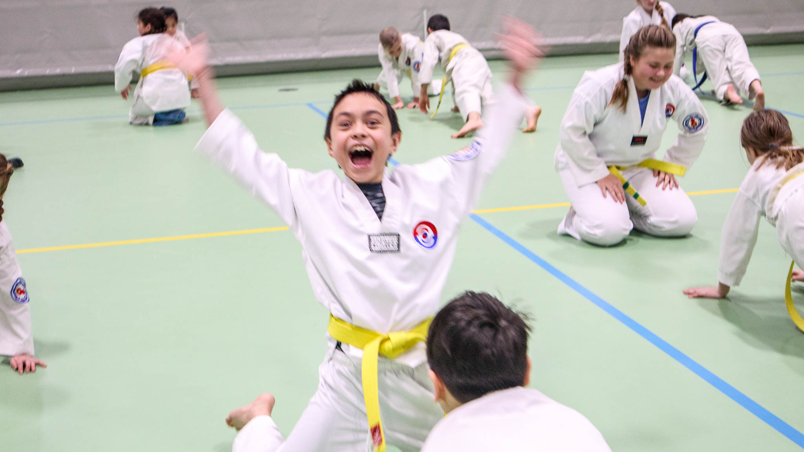

Se bilder fra nyttårscampen med gradering for barna i klubben
Publisert: 2024-01-19 | Kategorier: Ukategorisert

Det var en skikkelig suksess med årets nyttårscamp med gradering for alle barna i klubben
Helgen 13.-14. januar deltok over 70 barn på nyttårscamp i klubben med både trening, konkurranse, oppvisning og ikke minst gradering. I år benyttet vi Ullerålhallen, som fungerte godt til vårt formål med mulighet for å skille hallflaten for å trene og gradere de forskjellige barnegruppene parallelt. Barna så ut til å kose seg med og deltok ivrig på alle aktivitetene med innlagte bolle- frukt- og saftpause.
[gallery ids="43307,43306,43299,43301,43308,43305,43304,43300,43297,43296,43295,43294,43293,43292,43291,43290,43309,43289,43288,43287,43286,43285,43284,43302,43303,43283,43282,43281,43280,43254,43279,43278,43277,43276,43275,43274,43273,43272,43271,43270,43269,43268,43267,43266,43265,43264,43263,43262,43261,43260,43259,43258,43257,43256,43253,43252,43251,43250,43249"]